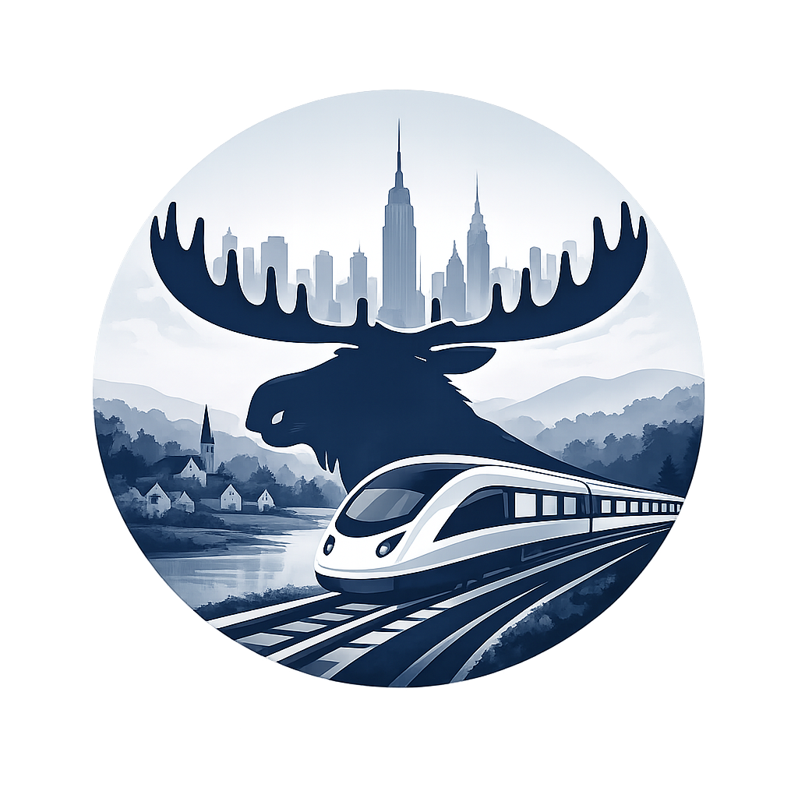

The problem
Planning a rail trip often means checking multiple websites. That makes it easy to miss a faster, cheaper, or more convenient journey.

Compare Amtrak and regional rail in one search.
Compare Amtrak and regional rail in one search.
Planning a rail trip often means checking multiple websites. That makes it easy to miss a faster, cheaper, or more convenient journey.
moose.train searches participating rail services in one place, making it easy to compare your options side by side.
Explore rail travel across NYC, Long Island, the Hudson and Harlem lines, and Connecticut.